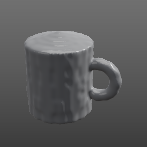
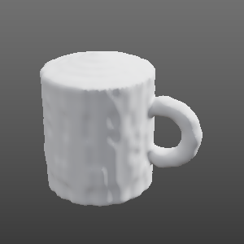
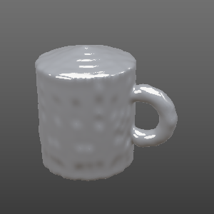

Render
What the machine measures, on a real shape. The fitted material and the scanned object, drawn with the equations Blender, Unity and Unreal use.
Simulated: no machine has been built yet. Every number on this page comes from the project's software
run on simulated samples and a simulated scan (opengonio render demo).

opengonio.render (numpy, no GPU).From light to pictures
Five steps; each is one command and leaves one file the next step reads.
- MeasureThe lamp and sample move; the camera reads brightness at each pair of angles. That is the
Bidirectional Reflectance Distribution Function (BRDF).
opengonio capture inplanecurve.csv - FitThree numbers that describe the curve: base colour, roughness, metallic (the glTF material model).
One row in five is held back to check the fit.
opengonio fit data/<run>fit.json - ScanThe same machine turns the object on its platter; 144 photos give its silhouettes, which carve
its shape out of a block of voxels.
opengonio scan runscan hullhull_mesh.ply, hull.glb - CombineShape + material into one glTF file, at real size (millimetres to metres), Z-up to Y-up.
opengonio render data/<run> --mesh hull_mesh.plyhull_mesh.glb, picture - RenderHere in the browser, or drag the
.glbinto Blender, Unity, Unreal or three.js.render.htmlpixels
Viewer
Drag to orbit, Shift + drag to move the lamp, wheel or pinch to zoom. Arrow keys orbit, + and − zoom, 0 resets.
This browser has no WebGL 2, so the live view is off. The pictures under Two renderers come from the same model.
Drop fit.json, a .glb or a .ply
Loading…
lamp angles the plan measured camera angles the lamp now. Beyond those angles the material is the model's guess.
Measured vs fitted
Dots: simulated samples (in-plane plan, θi 15 / 30 / 45 / 60°, θr every 5°, 2 % noise). Lines: the fitted model. A good fit runs through the dots; the holdout error checks it on rows the fit never saw.
RMS is of all rows, as % of the curve's peak. Holdout: fit on 4 of every 5 rows, scored on the 5th.
Scan to mesh
A mug with a cavity and a handle, seen by the scan plan's real camera poses. Silhouettes carve a block of voxels (the visual hull); the boundary becomes triangles, smoothed so the voxel steps don't read as texture.


Two renderers, one model
Top row: simulated truth. Bottom row: what the fit recovered. Drawn on the CPU by opengonio.render;
the viewer above draws the same formula on the GPU. The lamp term is the fitted model exactly; the soft sky is an
approximation, there only so shadowed sides are not black.
Engines
The material in the viewer, typed into each tool. The .glb carries the same values, so dragging it in
is enough.
- Blender File → Import → glTF 2.0. The material lands in a Principled BSDF.
- Unity Add the glTFast package, then drop the
.glbinto Assets. - Unreal Engine 5 Drag the
.glbinto the Content Browser. - three.js
GLTFLoader; the material arrives asMeshStandardMaterial.
Unity's URP takes smoothness = 1 − roughness. glTF is in metres and Y-up; the file's node holds that conversion, so the scanner's millimetres stay exact.
Your files
Open or drop them on the viewer. Nothing leaves this page.
| File | Made by | Gives the viewer |
|---|---|---|
data/<run>/fit.json | opengonio fit | the material (base colour, roughness, metallic, holdout) |
scan_out/hull_mesh.ply, hull.glb | opengonio scan hull | the scanned shape |
*.glb | opengonio render, Blender, any glTF tool | shape and, if present, its material |
material_*.json | opengonio render demo | a demo material |
Limits
- Grey. One camera channel: the fit has no colour. The tint is typed by hand.
- One material per object. No texture: the sample is uniform, so the whole object gets the same values.
- Isotropic. Brushed metal needs the anisotropic plan; the glTF model here has no direction.
- Visual hull. Silhouettes can't see a cavity: the mug's inside comes out filled (). Photometric stereo and photogrammetry add the detail.
- The model, not the measurement. Between and beyond the measured angles the picture shows the fitted model. Check the holdout before trusting it.